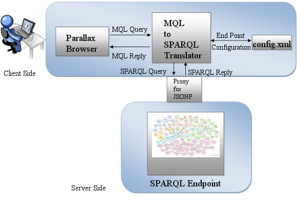

|
Choose your dataset and start browsing Or you may browse your own dataset by configuring here Some Sample Use Cases Try president, camera, skyscraper, horror. |

Sparallax works with a MQL to SPARQL two way translator (Request and Reply) which sits between Parallax and the SPARQL endpoint. Sparallax allows customizations on how to visualize a Semantic Web dataset thanks to simple configuration files. |